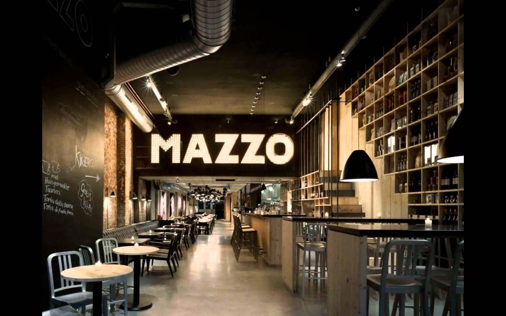

About Us.
Description
Edinburgh may well have some brilliant fine dining restaurants, some awesome cheap eats and certainly some of the best Indian restaurants in the land, but sometimes, a full-on restaurant meal is too much – all you need to hit the spot is a cup of coffee, a sandwich and maybe a cheeky bit of cake for after. Luckily, Edinburgh's positively rife with good coffee shops and cafés, so make sure you don't miss out when exploring the city. You'll no doubt find your new favourite quick stop in our list of Edinburgh's best cafés and coffee shops, so take a look and sate yourself silly.

Brew Lab
B rew Lab was a mighty four years in the making. Keen to get their vision just right, co-owners Dave Law and Tom Hyde took the time to explore the potential of the kind of café they might create – as well as how best to brew. Two filter coffees are brewed every day, as well as popular espresso blends that are roasted on a beloved Slayer Espresso Machine.

Dovecot Café
S et alongside tapestry arts space Dovecot Studios in Infirmary Street, this stylish little café has rightly accrued a merry gang of loyal followers. Dovecot devotees don’t muck about, and head straight for a cup of the well-brewed Artisan Roast espresso – a popular staple

Union of Genius
A small-scale café with a big heart and bigger ideas, this friendly little space offers up six homemade soups every day – all presented with a large wedge of suitably dunkable artisan bread (from local bakery, Dough Re Mi). Keen to source from nearby independent businesses and cafés, the tea comes from Eteaket and coffee from the ubiquitous Artisan Roast. Vegan cakes and gooey brownies are bought in from Love Pure Cakes and Lovecrumbs, respectively.

Café Portrait
C afé Portrait has quickly become one of Edinburgh’s best art venue cafés, and, with its striking gothic windows, consistently good food and creative buzz, it’s easy to see why. The menu is seasonal and changes daily, but the likes of Moroccan spiced salmon on a bed of chickpea and spinach, or goat’s cheese roulade won’t disappoint.
Back to Top